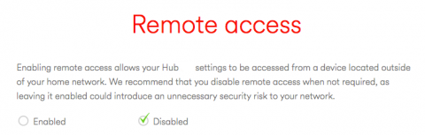

How to Secure Your Home Network: Tips and Best Practices
By: Dan
Change Default Passwords
Ensuring the security of your home network is of utmost importance in today's digital age. With the rise of smart devices, it has become easier for hackers to access your personal information and steal your identity. In order to safeguard your network and protect your privacy, it is vital to take certain precautions. One of the most crucial steps is to change the default passwords of your devices.
Default passwords are essentially the manufacturer's preset passwords that are used to access your device. They are often easily accessible and well-known, making it easier for hackers to gain unauthorized access to your systems. In fact, one of the biggest mistakes people make while setting up their devices is leaving the default passwords unchanged. This leaves your devices vulnerable to attacks, and your personal information can be at risk.
Therefore, it is important to change the default passwords of all your devices, including routers, modems, smart speakers, and other connected devices. Make sure you use strong, alphanumeric passwords with a mix of uppercase and lowercase letters, numbers, and special characters. Furthermore, it is recommended that you avoid using personal information in passwords, such as your name, date of birth, or phone number.
Changing the default passwords of your devices might seem like a small step, but it can go a long way in protecting your network and your personal data. By forming this habit, you can minimize the risk of cyber-attacks and safeguard your privacy. Remember, a secure home network is not just a good practice; it is a necessity in today's digital world.
ad space
Enable WPA2 Encryption
In our connected world, home networks are a prime target for cybercriminals attempting to gain access to our personal information. From sensitive financial data to pictures of loved ones, everything we keep in our digital world is at risk if our networks aren't properly secured. That's why it's essential to take proactive steps to protect our home networks from cyber threats. In this guide, we'll dive into ways that you can secure your home network, including the importance of enabling WPA2 encryption.
WPA2 encryption is an essential step towards protecting your home network. This encryption format ensures that your network communications are secure and protected from outside attackers. Without it, hackers can easily intercept your wireless transmissions, accessing everything from your bank accounts to your smart home devices. WPA2 encryption functions by creating a secure connection between your wireless devices and your network. This connection is established through a unique password that only those with authorized access can use.
Enabling WPA2 encryption is simple and can be done in just a few steps. First, log in to your wireless router's settings panel. Next, locate the security settings and change the wireless security mode to WPA2-PSK. Finally, create a strong password using a combination of upper and lowercase letters, numbers, and special characters.
Once you've enabled WPA2 encryption, you'll have peace of mind knowing that your home network is secure against most cyberattacks. In addition to enabling WPA2 encryption, we recommend that you keep your network firmware up to date, change your router's default password, and keep your antivirus software current. Together, these steps can go a long way towards keeping your home network and personal information safe from cyber threats.
In conclusion, securing your home network is essential in the current digital age. Taking steps like enabling WPA2 encryption can make a big difference in protecting your sensitive data. By following best practices and staying vigilant, you can enjoy the benefits of a connected home without the fear of cyber threats.
ad space
Use a Firewall
A Firewall for Your Home Network: Your First Line of Defense
Our online world is expanding by the day, and with every connected device, our online identities and personal data become more vulnerable. While we make sure to protect our computers and phones with antivirus software, one of the most significant entry points for cybercriminals is our home networks. And this is where a firewall comes into the picture.
In simple terms, a firewall is responsible for blocking unwanted traffic from reaching your devices or network. It's the first and most crucial line of defense against cyber attacks. Think of it as a bouncer who checks IDs at a nightclub to filter out potential troublemakers.
But, while a firewall is an indispensable tool, it's not a set-and-forget solution. Home networks can be complex, and without proper configuration, a firewall can end up blocking legitimate traffic or, in the worst-case scenario, allow malicious traffic to pass through.
So, how can you make sure you're getting the best protection from your firewall? Our tips and best practices will help you get started:
1. Start with a hardware firewall: A hardware firewall is a device that sits between your modem and router and is an excellent first line of defense. It's specifically designed to protect your network from external threats, and many internet service providers offer them for free.
2. Enable your software firewall: Every operating system comes with a built-in firewall, and you should always have it turned on. It's not as powerful as a hardware firewall, but it provides an additional layer of protection.
3. Customize your firewall settings: Firewall settings need to be tailored to your network's specific requirements. For example, if you have a smart home device that requires access to a specific port, you need to open that port in your firewall.
4. Keep your firewall updated: Just like any other software, a firewall needs to be updated regularly to keep up with new threats and ensure optimal performance.
By following these tips and best practices, you'll ensure that your firewall is working effectively and keeping your home network secure. Remember, a firewall is your first line of defense, so make sure it's properly configured, updated, and customized for your needs.
ad space
Disable Unnecessary Services
Ensuring the security of your home network can be a daunting task, but by following some simple tips and best practices, you can enhance your cybersecurity and keep your electronic devices safer. One of these essential best practices is disabling unnecessary services on your network.
Unnecessary services are applications that run in the background of your device, which could potentially be exploited by cybercriminals to gain unauthorized access to your home network. Disabling them can help reduce the attack surface for potential hackers, making it harder to infiltrate your system.
Some common services you may want to disable are file sharing protocols, multimedia services, and remote control access options. File sharing protocols and multimedia services permit the sharing of files and media between devices on your network, which makes them vulnerable to cyber threats.
It is also important to disable any remote control access options as this grants third parties access to your devices from outside your home network. This access only increases the risk of your network and devices being compromised.
To further maximize your home network's security, enabling firewalls and using strong passwords on all of your devices is also critical. Keeping your devices up-to-date through regular software updates and installing antivirus software can help eliminate any security vulnerabilities.
After disabling unnecessary services, it is also essential to keep check on your network frequently. Regular monitoring helps identify any suspicious activity that might indicate a security breach. Securing your home network can be intimidating initially, but by following these tips and best practices, you can stay ahead and protect your network and devices from potential cyber-attacks.
ad space
Keep Devices and Firmware Updated
Securing your home network is essential in protecting your personal information and maintaining your privacy. Hackers are constantly on the lookout for vulnerabilities in networks to exploit and steal sensitive data. As such, keeping devices and firmware updated is crucial to maintaining a secure home network.
Device and firmware updates feature security patches and bug fixes that help to prevent cyber attacks. Newer devices often have better security features and protocols that are not present in older models. By keeping your devices up-to-date, you mitigate the chances of a cybercriminal exploiting a known vulnerability on your network.
Moreover, firmware updates regularly release new features that could enhance the performance of your networking devices. For instance, a router firmware upgrade might improve network speed and connectivity. Therefore, regularly updating firmware is necessary for optimal performance and functionality of your networking devices.
When it comes to updating devices and firmware, there are several tips and best practices that you should observe. First, ensure that all devices connected to your network are compatible with the latest firmware version. Discontinued products may not have firmware updates, making them obsolete for modern networks.
Additionally, set up automatic updates for all devices and firmware where possible to ensure that you never miss an update. This function is available on most modern networking devices, and it saves you time and guarantees that your entire network stays secure.
In conclusion, keeping your devices and firmware updated goes a long way in securing your home network. It is one of the best methods to prevent cyber attacks and ensure optimal device performance. Follow the tips and best practices outlined above to keep your network up-to-date and secure.
ad space